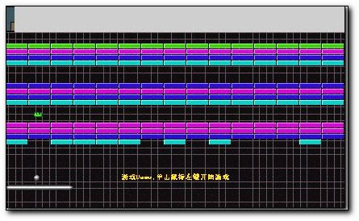

● 游戏策略
|
过关的条件是将可撞击掉小方块都装击掉即可过关
游戏一共有12关，12关过了接着重第1关玩起，但游戏得难度加大，即小球得速度加快。
小球撞在左壁，上壁，右壁会按物理规律反弹
小球撞在小方块，挡板上基本上按物理规律反弹，也有一定的随机因素。
不同颜色的小方块用正常的小球有不同的撞击次数。有限得撞击次数得小方块为可撞击掉的
小球的状态有两种：1 ,正常态 2 ,非正常态.
任何小方块都可以一次穿透, 只有吃道具的情况下才有可能变为非正常态. |
● 游戏道具
挡板接到一个道具，就可能产生某种事件，下面是道具和事件得对应：
1、红色胶囊,挡板上有火枪，可以对小方块射击，方法是鼠标左击
2、绿色胶囊,挡板有粘液，小球碰到挡板即被粘住，按一下鼠标左键再小球放送出去。
3、黄色胶囊,挡板加长
4、蓝色胶囊,每个小球变成 3 个小球
5、灰色胶囊,挡板缩短
6、橙色胶囊,随机事件
其中随机事件又有 10 种:加一条生命,减一条生命,挡板加长,挡板缩短,挡板加长到最长 ,挡板缩短到最短,小球速度加快,小球速度减慢,小球从正常态变为非正常态.直接过关
说明：如果小球处于非正常态，发生任何一种事件，小球先回到正常态，再处理这个事件。 |
| |
|
|